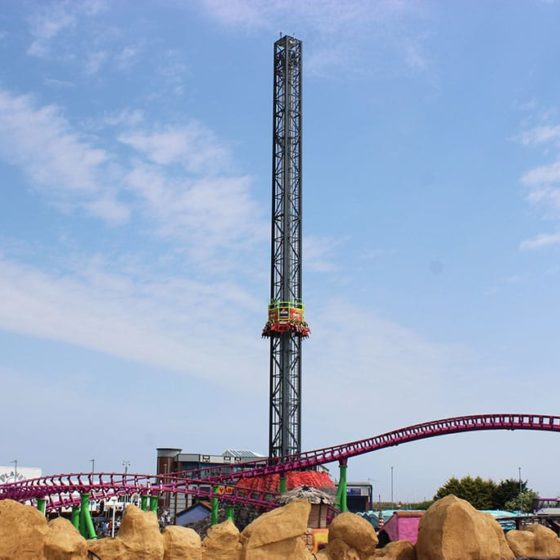

Height Requirement
1.4m
Top Speed
50 mph
Price
£6.50
Discovery Wristband Required
About this Ride
Operating since 1998, The Volcano is an S&S Space Shot that launches riders 183 feet into the air at speeds reaching 50 mph. Known for its distinctive compressed air charging sound that can be heard from nearby Butlin's, this thrilling drop tower provides an intense vertical launch experience. All riders must meet the minimum height requirement of 1.4m to ride.